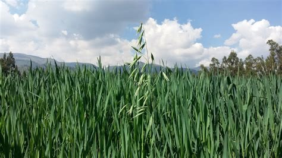
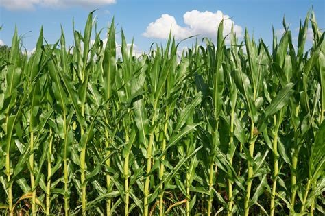
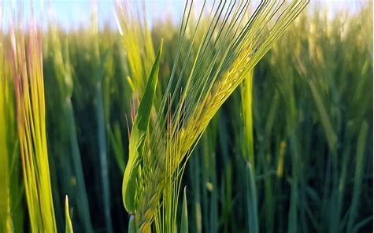
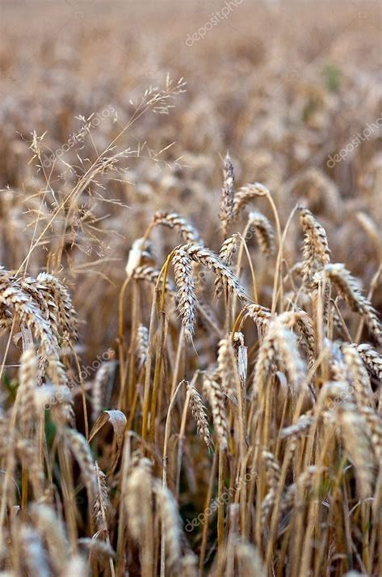
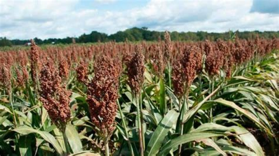
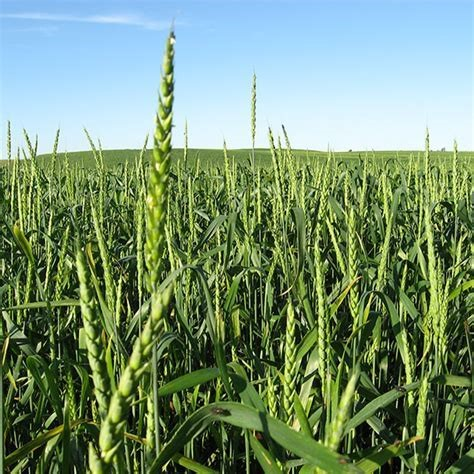

La avena forrajera se usa sola o en combinación con leguminosas forrajeras. La paja de avena está considerada como un muy buen alimento para el ganado.
Este grano es un magnífico forraje en particular para caballos y mulas, así como para el ganado vacuno y ovino.
MS – Porcentaje de Materia seca. 91.1
%DIVMS- Porcentaje de Digestibilidad I’m Vitro de Materia seca. 69
EM (Mcal/kgMs)-Energia Metabolizable. 2.48
% PB- Porcentaje de Proteína Bruta. 11.5
%PDR- Porcentaje de Proteína Degradable en el Rúmen. 55
%FND- Porcentaje de Fibra Detergente Neutro. 31

Maíz
El maíz se utiliza para la alimentación de ganado en diferentes formas, tales como rastrojo, grano y ensilaje, también se hace
maíz molido al que se agregan nutrientes para la alimentación integral de los animales.
MS – Porcentaje de Materia seca. 25.4
%DIVMS- Porcentaje de Digestibilidad I’m Vitro de Materia seca. 51.6
EM (Mcal/kgMs)-Energia Metabolizable. 1.86
% PB- Porcentaje de Proteína Bruta. 6.1
%PDR- Porcentaje de Proteína Degradable en el Rúmen. 0
%FND- Porcentaje de Fibra Detergente Neutro 80

Cebada
En la alimentación del ganado doble propósito se deben tratar de cubrir los requerimientos de los animales al menor costo
posible por lo que es buena opción. Los forrajes bien manejados son un alimento completo para las vacas, y permiten una buena
producción de leche y carne.
MS – Porcentaje de Materia seca. 88
%DIVMS- Porcentaje de Digestibilidad I’m Vitro de Materia seca. 84
EM (Mcal/kgMs)-Energia Metabolizable. 3.02
% PB- Porcentaje de Proteína Bruta 13.5
%PDR- Porcentaje de Proteína Degradable en el Rúmen. 70
%FND- Porcentaje de Fibra Detergente Neutro. 21

Centeno
El centeno contiene altos valores de factores antinutricionales en comparación con el maíz y el trigo.
Para su utilización de debe considerar la calidad del grano de centeno y el uso de una enzima adecuada para contrarrestar
los efectos de su alto contenido de pentosanos. De todos modos, lo más seguro es limitar su inclusión a un máximo de 25%. No debe
ser administrado a cerdas en lactancia ni lechones, ya que su baja palatabilidad reduce el consumo.
En el caso de las aves, puede ser usado hasta en un 20% en gallinas ponedoras y no más de un 10 a un 15% en parrilleros, dependiendo de edad.
MS – Porcentaje de Materia seca. 88
%DIVMS- Porcentaje de Digestibilidad I’m Vitro de Materia seca.84
EM (Mcal/kgMs)-Energia Metabolizable. 3.02
% PB- Porcentaje de Proteína Bruta 13.8
%PDR- Porcentaje de Proteína Degradable en el Rúmen. 0
%FND- Porcentaje de Fibra Detergente Neutro. 0

Sorgo
Se da en forma de ensilaje, pues tanto la panícula ensilada como el grano seco o ensilado se pueden usar como fuente principal
de energía en la alimentación de los cerdos en crecimiento y ceba.
MS – Porcentaje de Materia seca. 86.1
%DIVMS- Porcentaje de Digestibilidad I’m Vitro de Materia seca.85
EM (Mcal/kgMs)-Energia Metabolizable. 2.8
% PB- Porcentaje de Proteína Bruta 8.3
%PDR- Porcentaje de Proteína Degradable en el Rúmen. 40
%FND- Porcentaje de Fibra Detergente Neutro. 20

Trigo
Este puede ser usada en raciones de engorda de ganado bovino, así como en mantenimiento para ovinos y bovinos en forma de ensilaje.
MS – Porcentaje de Materia seca. 87.1
%DIVMS- Porcentaje de Digestibilidad I’m Vitro de Materia seca. 88
EM (Mcal/kgMs)-Energia Metabolizable. 3.17
% PB- Porcentaje de Proteína Bruta 15.2
%PDR- Porcentaje de Proteína Degradable en el Rúmen. 75
%FND- Porcentaje de Fibra Detergente Neutro. 30

Alfalfa
Se utiliza sobre todo como forraje verde o seca, para el ganado vacuno, ovino, porcino, caballos y aves de corral, normalmente
en pacas, se desgaja y se da al ganado.
MS – Porcentaje de Materia seca. 91
%DIVMS- Porcentaje de Digestibilidad I’m Vitro de Materia seca. 53
EM (Mcal/kgMs)-Energia Metabolizable. 1.91
% PB- Porcentaje de Proteína Bruta 14
%PDR- Porcentaje de Proteína Degradable en el Rúmen. 70
%FND- Porcentaje de Fibra Detergente Neutro. 60.03